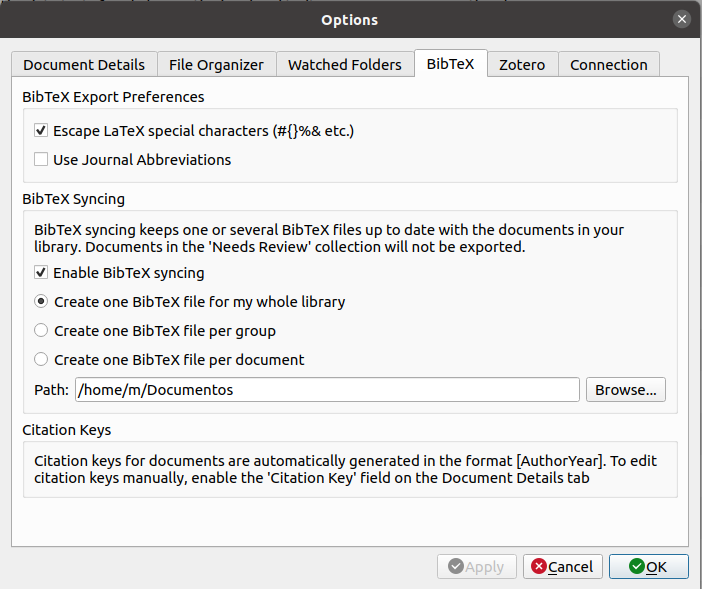
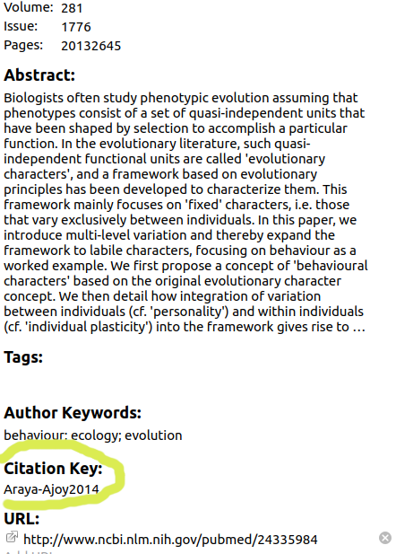

Pandoc (el convertor de archivos Rmd -> html) puede generar automáticamente citas y una bibliografía en varios estilos. Para utilizar esta función, deberán especificar un archivo de bibliografía utilizando el campo de metadatos de bibliografía en una sección de metadatos YAML. Por ejemplo:
En este ejemplo el archivo que contiene las citas se llama “library.bib”. Este archivo debe estar en el mismo directorio que el archivo Rmd. Noten que cuando añaden nuevas citas a Mendeley, necesitarán volver a copiar el archivo .bib. Hacer esto para cada nueva cita puede ser tedioso. Un truco de R para simplifiar esto es poner un código al inicio del Rmd (luego del YAML) para actualizar la copia del archivo .bib cada vez que se teje el html (o pdf):
La bibiolgrafia puede tomar cualquiera de estos formatos:
| Formato | Extensión |
|---|---|
| CSL-JSON | .json |
| MODS | .mods |
| BibLaTeX | .bib |
| BibTeX | .bibtex |
| RIS | .ris |
| EndNote | .enl |
| EndNote XML | .xml |
| ISI | .wos |
| MEDLINE | .medline |
| Copac | .copac |
Estos archivos pueden obtenerse de los programas para manejo de citas. Por ejemplo, en Mendeley podemos guardar un archivo .bib yendo a “Tools > Options > BibTex”. Esto les mostrará el siguiente menú:

Allí puede escoger si quieren guardar una sola base de datos o una para cada “grupo” (carpetas en Mendeley). Una vez exportado deben ir al sitio donde se ha guardado el archivo .bib (en este ejemplo “/home/m/Documents/”) y copiarlo en la carpeta del Rmd.
Ejercicio 1
Genere un archivo con citas usando su programa favorito de manejo de bibliografía.
Las citas van entre corchetes y están separadas por punto y coma. Dentro de los corchetes se debe poner la “clave” de la cita antecedida de un ‘@’:
“Bla bla (Araya-Ajoy and Dingemanse 2014)”
La clave es generada por el programa de manejo de bibliografía. En Mendeley lo podemos encontrar en el menú de “detalles” de cada cita:

Podemos añadir prefijos y sufijos de esta forma:
“Bla bla (ver Araya-Ajoy and Dingemanse 2014 pp 9)”
Dentro de los corchetes pueden incluirse varias citas. Estas deben ser separadas por punto y coma:
“Bla bla (Araya-Ajoy and Dingemanse 2014; Chaverri, Gillam, and Kunz 2013)”
Podemos excluir los autores en caso de que estos esten citados en el texto añandiendo un ‘-’ antes del ‘@’:
“Chaverri et al. proponen que bla bla (2013)”
También lo podemos hacer de la siguiente forma:
“Chaverri, Gillam, and Kunz (2013) propone que bla bla …”
“Chaverri, Gillam, and Kunz (2013, pp 3) propone que bla bla …”
Las referencias que no son citadas en el texto se pueden añadir a los metadatos YAML de esta forma:
---
title: "Citas en Rmarkdown"
output: html_document
bibliography: bibliografia.bib
nocite: |
@Vargas-Castro2015, @Eberhard2009
---
Estas referencias estarán incluidas en la bibliografía (ver abajo al final del tutorial).
Las bibliografías se colocarán al final del documento. Lo normal es terminar el documento con un encabezado apropiado:
Ejercicio 2
2.1 Incluya un parráfo con 2 citas en un solo corchete
2.2 Añada dos referencias no citadas en el texto
2.3 Excluya los autores de una cita
De forma predeterminada, pandoc utiliza el formato de fecha-autor de Chicago para citas y referencias. Para usar otro estilo, se debe especificar un archivo de estilo CSL 1.0 en el campo de metadatos csl. Por ejemplo:
---
title: "Citas en Rmarkdown"
output: html_document
bibliography: bibliografia.bib
csl: sysbio.csl
---
Estos archivos deben ser guardados en la misma carpeta del Rmd. En estos sitios se pueden encontrar archivos CSL con el formato de citas de una gran variedad de revistas:
Rmarkdown nos brinda algunas herramientas de formato de texto que pueden ser explotadas para llevar a cabo tareas comunes en la escritura de artículos:
Si a un párrafo le añadimos doble indentación (tecla “tab”) este parecera como un recuadro en el html (o pdf)
El texto tambien puede ser exluido totalmente del arhivo de salida usando “<!–” al inicio de cada linea que se desea excluir (lo podemos hacer con “Cntrl + Shift + C”):
Obviamente, la escritura de árticulos en Rmd se puede complementar con otras herramientas vistas anteriormente en el curso (por ejemplo en la introducción a Rmarkdown), como por ejemplo incluir gráficos, poner valores descriptivos y de resultados de pruebas estádisticas directamente desde el código (‘codigo en texto’), inlcuir tablas, etc.
Ejercicio 3
3.1 Busque el archivo CSL para el estilo de referencias de “Current Biology”
3.2 Implemente el estilo de referencias de “Current Biology” en su Rmd
3.3 Añada un párrafo donde describa el promedio para el largo del pétalo y el largo del sépalo (en el juego de datos ‘iris’) y la correlación entre estas para la especie setosa
3.3 Añada un gráfico de dispersión que ilustre la correlación entre las variables. Incluya una leyenda para el gráfico (use la opción del chunk “fig.cap”)